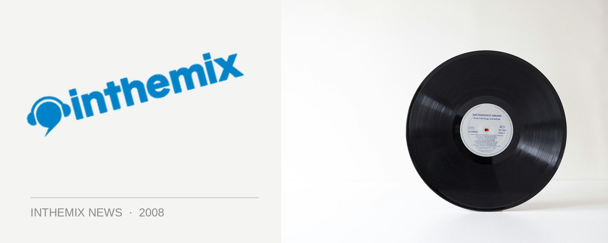

Ministry of Sound returns to Mean Fiddler this NYD
Ministry of Sound NYD lineup Snap! featured gallery
The depths of Rouse Hill was the last place that anyone expected the mighty Ministry of Sound to take up residency for a massive New Years Day party, but at the beginning of this year that’s exactly what happened. On the 1st of January 2008 the Ministry transformed The Mean Fiddler at Rouse Hill into an impressive daytime festival event, with the punters entertained by the likes of Sneaky Sound System, The Presets, The Potbelleez, Claude Von Stroke and more. And this upcoming New Years Day, the Ministry of Sound will be returning to the Mean Fiddler.
Once again, you can expect MOS NYD 09 to take place over multiple stages, including the Mean Fiddler’s ‘Ibiza Style’ open-air terrace setting to allow the punters to get a little bit of sunshine on what’s bound to be a scorching-hot day. The international guests for the day? Steve Aoki, Utah Saints, Mark Brown and Atomic Hooligan will all be onboard, along with the local big hitters for the Ministry including Goodwill, Sam La More, Raye Antonelli and many more to keep the day kicking along at a fast tempo.
Ministry of Sound NYD lineup Snap! featured gallery
MOS NYD 09 takes place at The Mean Fiddler at Rouse Hill on January 1st 2009. Tickets on sale Thursday 30th October, check out the full lineup below…
Steve Aoki
Utah Saints
Mark Brown
Atomic Hooligan
Oliver Lang
TV Rock
Stafford Brothers
Timmy Trumpet
Goodwill
Beni
Sam La More
Baby Gee
Raye Antonelli
Klaus Hill
Trent Rackus